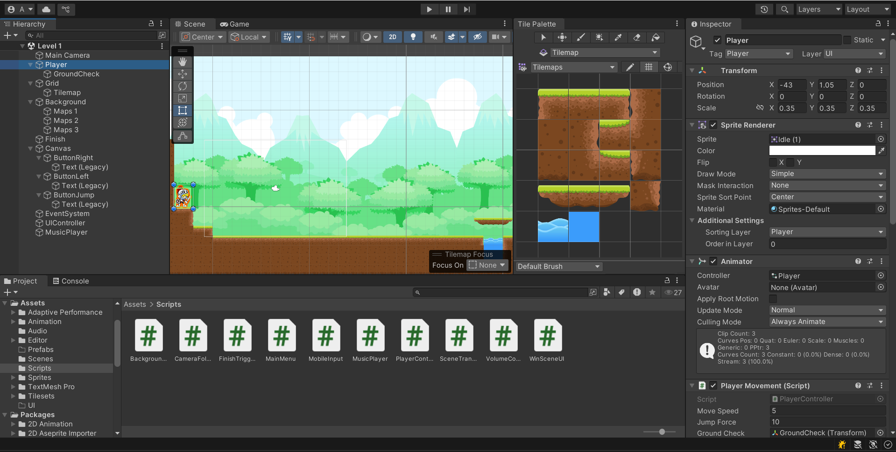
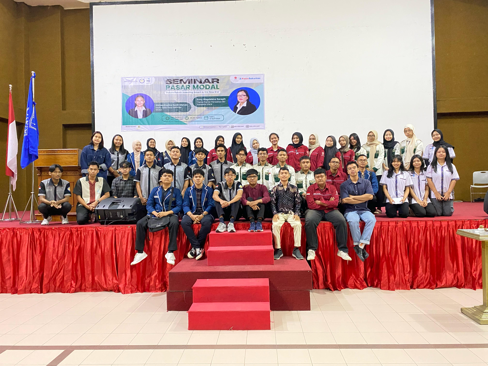
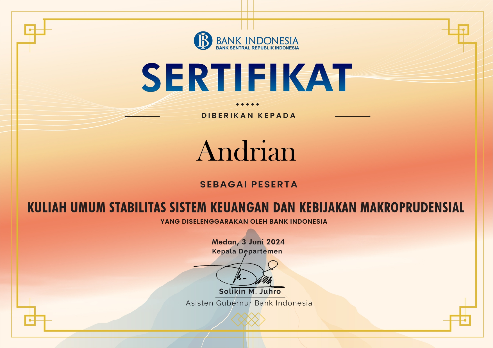
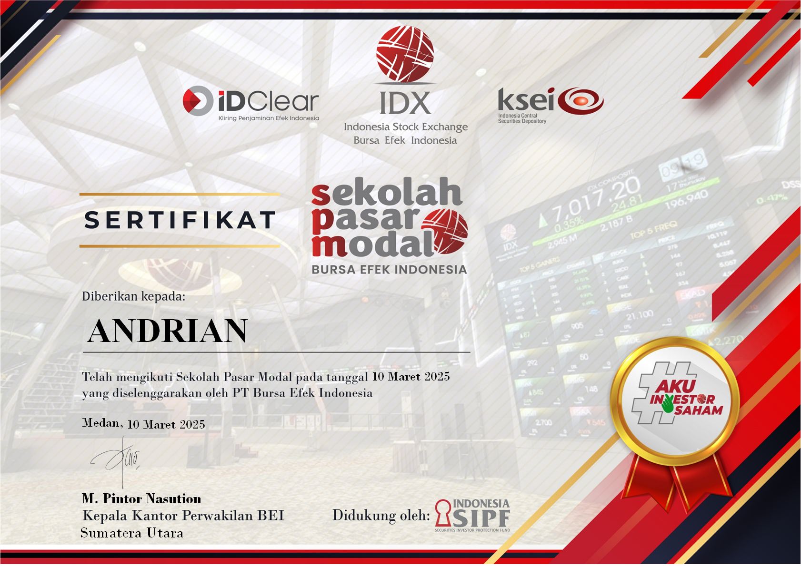

Portfolio Projects
2D Platformer Game (Unity C#)

Developed a stickman-themed 2D platformer game using Unity and C#. Features include side scrolling camera, movement mechanics, jumping, and obstacle detection. Assets from GameArt2D were used. Prototype available on itch.io (link available upon request).
Leadership Project: Galeri Investasi BEI UNIMED

As President Director, I organized 5+ capital market education events that reached 500+ students. These included collaborations with IDX, securities firms, and the development of a Capital Market School tailored for Gen Z. I led a 20+ student team and improved event efficiency through strategic planning.
StockLab Competition (Volunteer Crew)

Served as technical crew and coordinator during the StockLab inter-campus competition. Responsibilities included setup, participant management, and ensuring smooth flow of the event involving over 100 participants.
Certificates

Public Lecture: Financial System Stability and Macroprudential Policy – Bank Indonesia (2024)

Capital Market School: Organized by Indonesia Stock Exchange (2025)